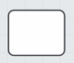
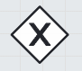
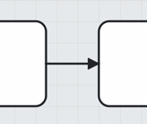
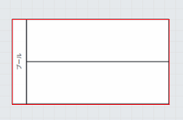
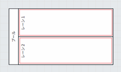
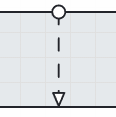
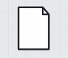

BPMN作成ハンドブック
業務プロセスの可視化と改善、標準化のための実践ガイド
第1章 はじめに – BPMNで業務を見える化・改善する
1.1 BPMNとは？ – 業務プロセスの共通言語
BPMN (Business Process Model and Notation) とは、業務プロセスを視覚的に記述するための国際標準の表記法です。複雑な業務の流れを、誰にでも理解しやすい図（BPMN図）として表現することができます。 組織内での多様な業務は、しばしば複数の部署や担当者が関わり合って遂行されます。BPMNは、これらの関係者間で業務プロセスに関する認識を統一し、誤解を防ぐための「共通言語」としての役割を果たします。

従来の文字ベースの業務マニュアルでは、全体の流れや関連性が把握しにくく、更新も煩雑になりがちでした。BPMNを用いることで、業務の開始から終了までの一連の流れ、各ステップでの作業内容、判断条件、担当者などを視覚的に明確にできます。
1.2 なぜBPMNなのか？ – 利用時のメリットと目的
BPMNを導入することには、多くのメリットがあります。これらは組織の業務効率と透明性を大幅に向上させる可能性を秘めています。
-
業務の可視化と理解促進：
複雑な業務プロセスを誰にでも分かりやすく「見える化」することで、関係者間の共通理解を深めます。これにより、業務の全体像を把握しやすくなり、個々の作業がプロセス全体の中でどのような役割を担っているのかが明確になります。
-
非効率性の発見と業務改善：
プロセスを客観的に図示することで、これまで気づかなかったボトルネック、無駄な作業、重複作業などが明らかになり、具体的な改善策を検討するための土台となります。現状の業務プロセス (As-Is) を正確に把握することが、効果的な改善への第一歩です。 -
標準化と属人化の解消：
業務手順を標準化することで、特定の担当者しか業務内容を詳細に把握していないといった「属人化」の状態を解消できます。これにより、担当者変更や業務分担変更時のリスク低減に繋がります。 -
職員研修・引継ぎの効率化：
視覚的に分かりやすいBPMN図は、新人研修や人事異動時の業務引継ぎ資料としても非常に有効です。業務内容の理解を早め、研修期間の短縮や引継ぎの質の向上に貢献します。 -
システム調達・開発の効率化：
情報システムの導入や更新、既存システムを改修したりする際に、BPMN図は業務要件を明確に伝えるための有効な手段となります。システムベンダーとの認識の齟齬を防ぎ、手戻りの削減や開発・移行期間の短縮に繋がります。 -
法令改正への迅速な対応：
行政事務は法令に基づいて行われるため、法令改正は業務プロセスの変更を伴います。プロセスが可視化されていれば、法令改正によって影響を受ける箇所や変更すべき点を迅速に特定し、対応することが容易になります。
1.3 本ハンドブックの読み進め方
本ハンドブックは、BPMNを初めて学ぶ方でも理解しやすいように、基本的な概念から具体的な作成方法、活用事例までを段階的に解説します。各セクションは、理論の学習から実践、そして応用へとスムーズに移行できるよう構成されています。 特に、実際にBPMNエディタを操作しながら読み進めることを推奨します。手を動かしながら学ぶことで、より深くBPMNを理解し、習得することができるでしょう。
第2章 BPMN 2.0の基本
2.1 基本的な考え方
BPMNには多くの図形やルールがありますが、最初からすべてを覚える必要はありません。まずは、業務プロセスを表現するための最も基本的な考え方と、主要な要素を理解することから始めましょう。
- 横長の四角形（プールとレーン）を書き、部署名や役割で区切る（誰が関わるか）。
- 角丸の四角形（タスク）を並べる（何を行うか）。
- 矢印（シーケンスフロー）でつなぐ（どのような順番で行うか）。
- 開始を細い円（開始イベント）、終了を太い円（終了イベント）で示す（いつ始まり、いつ終わるか）。

基本的には、これらの要素の組み合わせで、多くの業務プロセスの骨格を描くことができます。
2.2 主要な図形要素
BPMN 2.0でよく使われる主要な図形要素とその意味を解説します。これらの記号を理解することが、BPMN図を読み書きする第一歩です。
| 図形 (イメージ) | 名称 | 簡単な意味と利用例 |
|---|---|---|
| 開始イベント (Start Event) | プロセスの開始点 (細い線の円)。例：申請受付開始、定時処理開始。 | |
| 終了イベント (End Event) | プロセスの終了点 (太い線の円)。例：処理完了、通知発行完了。 | |
|  | タスク (Task) | 個別の作業単位 (角が丸い四角形)。例：「申請書を確認する」「データを入力する」。 |
|  | 排他ゲートウェイ (Exclusive Gateway) | 複数の経路のうち、条件に合致する「一つだけ」に進む (ひし形、X印または無印)。例：「承認ルート分岐」「エラー有無で分岐」。 |
| 並行ゲートウェイ (Parallel Gateway) | 複数の経路を「同時に」実行、または全経路完了を待つ (ひし形、＋印)。例：「複数部署へ同時照会」「関連書類準備と審査を並行」。 | |
|  | シーケンスフロー (Sequence Flow) | 要素の実行順序、プロセスの流れ (実線の矢印)。 |
|  | プール (Pool) | 参加者やプロセス全体の括り（住民プールと役所内のプールなど）。 |
|  | レーン (Lane) | プール内の役割や担当者。例：「窓口担当」「承認者」。 |
|  | メッセージフロー (Message Flow) | 異なるプール間のメッセージや情報のやり取り (破線の矢印)。 |
|  | データオブジェクト (Data Object) | プロセスで扱う情報や書類 (右上隅が折れた書類の形)。例：「申請書」「報告書」。 |
これらの図形を組み合わせることで、業務プロセスを具体的に表現していきます。 業務の可視化が進むことで、関係者全員が同じ理解を持つことができ、業務改善の議論がスムーズになります。
2.3 BPMN記載レベル
BPMNにはいくつかのレベルがあり、目的に応じて使い分けられます。地方自治体においては、特に「分析レベル」での記述が推奨されることが多いようです。
しかしあくまで「分析レベル」での記述は、業務の現状を把握するための一つの手段であり、必ずしも全てこのレベルで記述する必要はありません。
まずは、業務の全体像を把握するために「記述レベル」での記載を行い、業務を可視化していくことが肝要です。
- 記述レベル： 事務の基本的な作業の流れを記載するレベル。
- 分析レベル： 記述レベルの内容に加え、事務の詳細（個々の作業をアクティビティとして具体的に表記）や、例外的な処理（エラー処理や手戻りなど）までを表記するレベル。業務を「人が行う作業」と「システムが行う作業」に明確に仕分け、関係者間での共通理解を促すことを目的とします。これが標準化や属人化の解消に繋がります。
- 実行可能レベル： RPAの詳細設計資料やプログラム開発のための設計資料として詳細に記載するレベル。
「分析レベル」での記述ができると、業務が正確に把握可能となり、他の職員やシステムベンダーとのコミュニケーションが円滑になります。これは、職員研修・引継ぎの効率化にも大いに役立ちます。
第3章 BPMNエディタ入門
BPMN図を作成するためには、専用のエディタを利用すると便利です。ここでは、BPMNエディタ Flow Canvas の基本的な使い方を解説します。
3.1 エディタの画面構成と基本機能
多くのBPMNエディタは、以下のような共通の画面構成と機能を備えています。
- キャンバスエリア： BPMN図を実際に描画し、編集する中心的な作業領域。
- パレット： BPMNの各要素（開始イベント、タスク、ゲートウェイなど）がアイコンとして並んでいる領域。ここから要素を選択し、キャンバスに配置します。
- プロパティパネル： キャンバス上で選択した要素の詳細情報（名前、条件など）を設定・編集する領域。
- メニューバー/ツールバー： ファイル操作（新規作成、保存、読込）などの共通操作を行うメニューやボタン。
3.2 初めてのBPMN図作成（要素の配置、接続、ラベル付け）
簡単なBPMN図を作成する基本的な手順は以下の通りです。
- プールの配置： パレットから「プール」を選択し、キャンバスに配置。必要に応じて「レーン」を追加します。
- 開始イベントの配置： プールの左端の適切なレーンに「開始イベント」を配置します。
- タスクの配置： 具体的な作業を表す「タスク」をパレットから選択し、担当レーン上に配置します。
- シーケンスフローでの接続： 配置したイベントやタスクを「シーケンスフロー」でつなぎ、業務の流れを表現します。
- ゲートウェイの配置と分岐： 条件分岐がある場合は、「ゲートウェイ」を配置し、分岐フローを作成します。
- 終了イベントの配置： プロセスの右端に「終了イベント」を配置します。
- ラベル付け： 配置した全ての要素に、内容が明確にわかる名称（ラベル）を付けます。これが業務の可視化と理解促進の鍵です。
- 保存： 作成したBPMN図を保存します（通常はXML形式）。
最初は簡単なプロセスから始め、徐々に慣れていくことが大切です。
第4章 実践！BPMN記載例
4.1 記載例を読む上での注意点
ここに提示する記載例は、あくまでBPMNの理解を助けるための「一例」です。各組織の体制や規則によって実際のプロセスは異なります。基本的な考え方や表現方法を参考に、自身の業務に合わせて修正・追記してください。 「分析レベル」での記述ができるようになると、マニュアルや引継ぎ資料として大変重宝します。これにより、業務の理解が進み、属人化の解消に繋がります。
4.2 事例：住民票の写し交付申請プロセス（窓口申請）
市民が窓口で住民票の写しを申請し、職員が発行・交付する一般的な業務プロセスを例にします。
- 主な参加者（プール/レーン）： 市民、市民課（窓口、バックヤード）
- 主要タスク例： 申請書受付、本人確認、対象者検索、住民票印刷、交付
- 関連データ例： 申請書、本人確認書類、住民記録システム、住基ネットCS

この図により、申請から交付までの流れ、担当者の役割、必要な条件判断などが明確になり、業務の可視化が実現されます。新人職員の研修資料としても有効です。
第5章 分かりやすいBPMN図作成のためのヒント集
5.1 初心者が陥りがちなワナと、その回避策
- ワナ1：複雑すぎる図 → 回避策：基本要素から始め、詳細はサブプロセスに。1ページに収める。
- ワナ2：フローの方向がバラバラ → 回避策：左から右への流れを基本とし、一貫性を持たせる。
- ワナ3：ゲートウェイの誤用 → 回避策：分岐条件を明確に記述し、ゲートウェイの種類を正しく使い分ける。
- ワナ4：プールとレーンの混乱 → 回避策：「誰が」行うかを意識し、組織構造に合わせて設定する。
- ワナ5：命名規則の不統一・曖昧さ → 回避策：「目的語＋動詞」で具体的に、一貫した用語を使用する。
これらのワナを避けることで、BPMN図の可読性が向上し、業務の可視化の効果が高まります。
5.2 一目で伝わる図のルール：レイアウト、命名規則、シンプル化の秘訣
- レイアウトの工夫： 1ページに収める、フローの方向を統一（左から右へ）、適切な間隔と整列、コネクタの交差を避ける。
- 命名規則の徹底： タスク名は「（目的語）を（動詞）する」、イベント名も具体的に、ゲートウェイの分岐フローには条件を明記。
- シンプル化の追求： 使用する記号の種類を絞る、サブプロセスの活用、注釈の活用、対象プロセスの範囲を明確にする。
これらのルールを守ることで、誰にとっても理解しやすいBPMN図を作成でき、職員研修・引継ぎの効率化にも繋がります。
第6章 組織内でのBPMN活用
6.1 BPMNを組織で活用するためのステップ
- 目的の共有とリーダーシップ： なぜBPMNを導入するのか目的を明確にし、経営層・管理職がコミットする。
- スモールスタートと成功体験の共有： 単純な業務や特定の業務・部署などから試行し、成功事例を共有する。
- 支援体制の整備： 記載方法ついてのサポートを提供する。
- 研修と学習機会の提供： 研修を実施し、理解とスキルアップを支援する。
- ツール環境の整備： アクセスしやすく使いやすいBPMNエディタ環境を提供する。
- BPMN図の共有と日常的な活用： 作成した図をポータルサイトなどで共有し、業務マニュアルや改善検討資料として日常的に活用する文化を醸成する。
- 評価とフィードバックによる継続的改善： 導入効果を定期的に評価し、改善サイクルを確立する。
これらのステップを通じて、BPMNは組織内の業務改善と標準化を推進する強力なツールとなります。
6.2 研修の進め方と学習リソース
効果的な研修と学習リソースの提供は、BPMNスキルを組織全体に広める鍵です。
- 研修計画： 対象者とレベルに応じたプログラム（基礎、実践、推進者向けなど）を設計する。
- 研修内容： BPMNの基本、エディタ操作、実践演習、分かりやすい図の作成ポイント、成功事例紹介など。
- 研修の工夫： 専門用語を避け、実践重視、メリット提示、飽きさせない工夫。
- 学習リソース： 内部資料（本ハンドブック等）、公的ガイドライン、オンラインチュートリアル、エディタの公式ドキュメントなどを整備・活用する。
これにより、全職員がBPMNを効果的に活用できるようになり、職員研修・引継ぎの効率化が図られ、組織全体の業務改善能力が向上します。
第7章 おわりに
本ハンドブックを通じて、BPMNの基本的な知識と活用方法を学んでいただけたことと思います。BPMNは、業務プロセスを「見える化」し、関係者間の共通理解を深め、継続的な業務改善を推進するための強力なツールです。
BPMNを習得し活用することで、以下のメリットが期待できます。
- 業務の可視化： 複雑なプロセスも一目で理解。
- 業務改善： ボトルネックや無駄を発見し、効率化。
- 標準化と属人化の解消： 誰でも同じ品質で業務を遂行。
- 職員研修・引継ぎの効率化： スムーズな知識移転。
BPMNのスキルは、個々の職員の能力向上だけでなく、組織全体の生産性向上とサービス品質の向上に大きく貢献します。ぜひ、本ハンドブックで得た知識を日々の業務に活かし、より良い業務プロセスの構築を目指してください。 さらなる学習を進め、BPMNを組織文化として根付かせることで、変化に強く、継続的に進化できる組織づくりに繋がることを願っています。